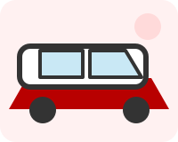
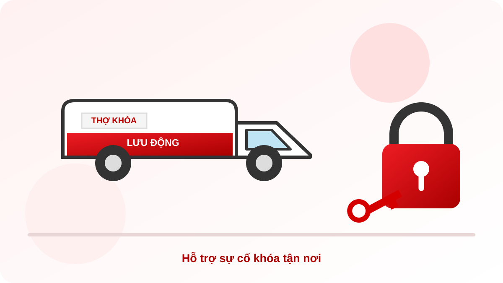
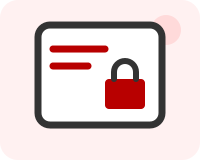

🚗 Mở khóa cửa ô tô
Tiếp nhận yêu cầu khi cửa ô tô bị khóa, chìa khóa để bên trong hoặc điều khiển gặp sự cố.
Xem dịch vụ mở khóa ô tô →HỖ TRỢ SỰ CỐ KHÓA TẬN NƠI

Hỗ trợ khóa ô tô, làm chìa khóa xe máy, sửa chữa cửa cuốn, mở khóa két sắt và lắp đặt khóa cửa thông minh.
Cẩm Phả · Vân Đồn · Cửa Ông · Mông Dương · Quang Hanh · Quảng Yên · Tiên Yên · Đầm Hà · Hải Hà
GỌI NGAY: 090 402 6204Gặp sự cố khóa cửa, khóa xe hoặc két sắt có thể làm gián đoạn công việc và sinh hoạt. THỢ KHÓA LƯU ĐỘNG tiếp nhận yêu cầu hỗ trợ tại các khu vực được liệt kê trên website. Bạn hãy gọi điện, mô tả tình trạng và địa điểm để trao đổi phương án phù hợp trước khi thợ di chuyển.
Cho biết loại khóa hoặc thiết bị đang gặp vấn đề, dấu hiệu cụ thể và hãng xe nếu cần làm chìa khóa xe.
Nói rõ địa chỉ hoặc khu vực tại Quảng Ninh để trao đổi khả năng nhận việc và thời gian di chuyển dự kiến.
Hãy hỏi rõ phương án xử lý và chi phí dự kiến trước khi đồng ý sử dụng dịch vụ. Thời gian và chi phí phụ thuộc tình trạng thực tế.
Chọn nhóm dịch vụ để xem nội dung chi tiết và liên hệ khi cần hỗ trợ.

Tiếp nhận yêu cầu khi cửa ô tô bị khóa, chìa khóa để bên trong hoặc điều khiển gặp sự cố.
Xem dịch vụ mở khóa ô tô →Trao đổi nhu cầu làm lại chìa, làm chìa dự phòng và kiểm tra sự cố Smartkey tùy dòng xe.
Xem dịch vụ chìa khóa xe máy →Tiếp nhận các lỗi cửa cuốn không lên xuống, điều khiển không hoạt động và nhu cầu làm thêm remote.
Xem dịch vụ cửa cuốn →Trao đổi phương án hỗ trợ khi két sắt bị kẹt, mất chìa hoặc gặp sự cố mã số.
Xem dịch vụ két sắt →Tư vấn chọn khóa theo cấu tạo cửa và nhu cầu sử dụng của gia đình hoặc cơ sở kinh doanh.
Xem dịch vụ khóa thông minh →
Trao đổi nhu cầu thẻ từ phòng, đầu đọc và công tắc thẻ từ theo hệ thống thực tế.
Xem dịch vụ thẻ từ →Khóa cửa bị kẹt, mất chìa, khóa thông minh cần tư vấn lắp đặt hoặc kiểm tra độ phù hợp với cửa.
Trao đổi tình trạng chìa khóa, điều khiển, chìa dự phòng hoặc Smartkey để xác định hướng hỗ trợ phù hợp.
Thông báo biểu hiện lỗi, loại thiết bị và vị trí để việc tiếp nhận yêu cầu được rõ ràng hơn.
THỢ KHÓA LƯU ĐỘNG tiếp nhận yêu cầu tại các khu vực sau, tùy địa điểm, lịch làm việc và tình trạng thực tế:
Vui lòng gọi trước để xác nhận khả năng hỗ trợ tại địa chỉ cụ thể và thời gian dự kiến.
Mất chìa khóa, cửa cuốn không chạy hay két sắt bị kẹt? Xem một số lưu ý an toàn trước khi thao tác để hạn chế làm hỏng khóa và thiết bị.
Website giới thiệu các dịch vụ mở khóa cửa ô tô, làm chìa khóa xe máy, sửa chữa cửa cuốn, hỗ trợ sự cố két sắt và tư vấn lắp đặt khóa cửa thông minh.
Các khu vực mục tiêu gồm Cẩm Phả, Vân Đồn, Cửa Ông, Mông Dương, Quang Hanh, Quảng Yên, Tiên Yên, Đầm Hà và Hải Hà. Hãy gọi trước để xác nhận khả năng hỗ trợ tại địa chỉ cụ thể.
Bạn hãy cho biết vị trí, loại khóa hoặc thiết bị, dấu hiệu đang gặp phải và thời điểm cần hỗ trợ. Với khóa xe, nên cung cấp thêm hãng và dòng xe nếu biết.
Thời gian di chuyển và chi phí phụ thuộc địa điểm, loại khóa và tình trạng thực tế. Vui lòng trao đổi qua điện thoại để xác nhận trước khi sử dụng dịch vụ.
Cần kiểm tra chất liệu, độ dày, kết cấu cửa và vị trí lắp trước khi chọn mẫu khóa. Bạn có thể gửi ảnh tổng thể cánh cửa và khu vực tay nắm để trao đổi sơ bộ; việc chọn thiết bị cần dựa trên thông số thực tế. Xem dịch vụ lắp đặt khóa thông minh →
Hãy cho biết hệ thống đang sử dụng, loại thẻ, thiết bị đang gặp lỗi và biểu hiện cụ thể. Nếu thuận tiện, chuẩn bị ảnh nhãn model của thiết bị; không gửi thông tin phòng hoặc dữ liệu riêng của khách. Xem dịch vụ thẻ từ khách sạn, nhà nghỉ →
Một số hệ thống có thể lắp thêm bộ điều khiển qua điện thoại nếu thiết bị tương thích với motor và hộp nhận tín hiệu hiện có. Cần kiểm tra hệ thống thực tế trước khi chọn thiết bị. Xem dịch vụ mở cửa cuốn qua điện thoại →
Cần trao đổi về khóa ô tô, làm chìa khóa xe máy, cửa cuốn, két sắt hoặc khóa cửa thông minh?
090 402 6204
GỌI THỢ KHÓAMuốn xem vị trí trên bản đồ? Mở vị trí THỢ KHÓA LƯU ĐỘNG trên Google Maps ↗